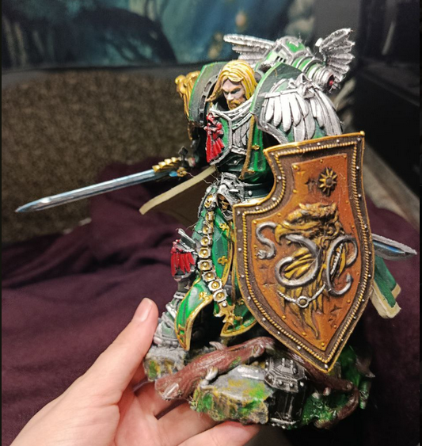
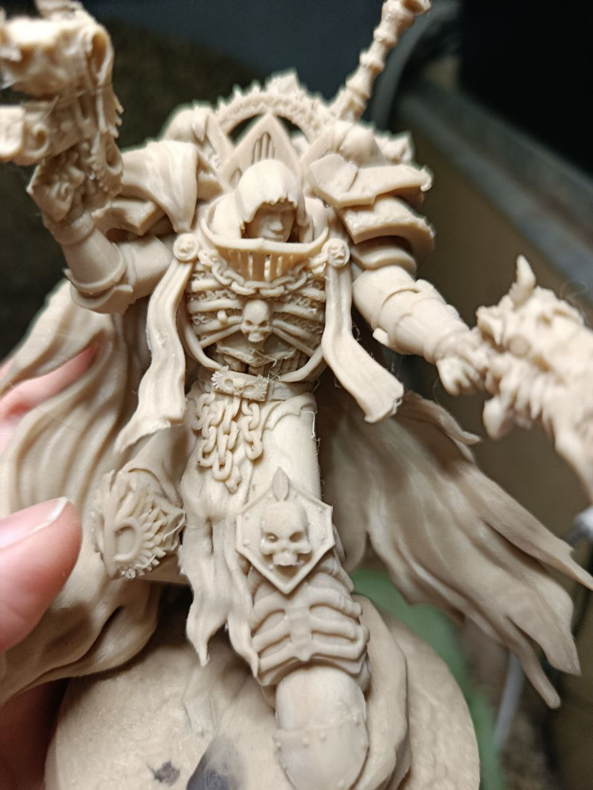
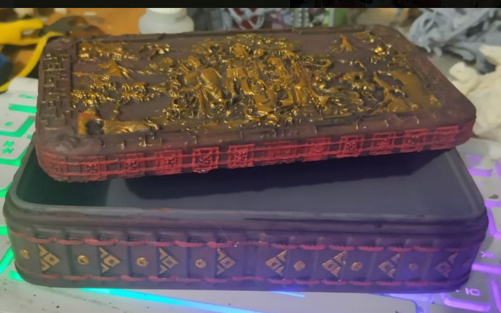
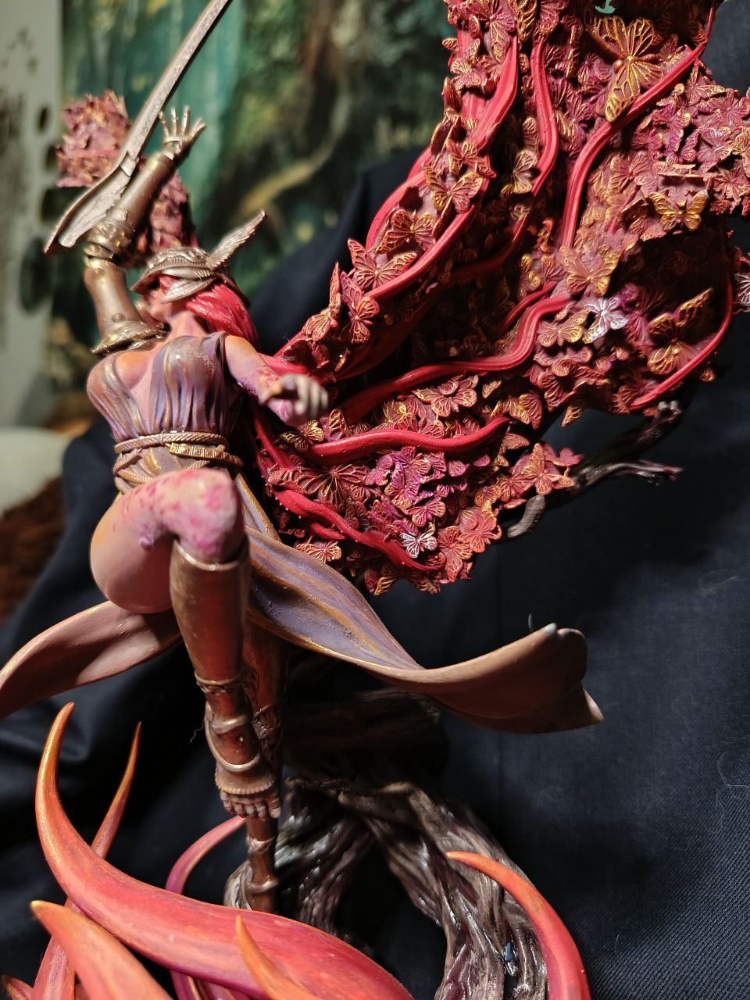
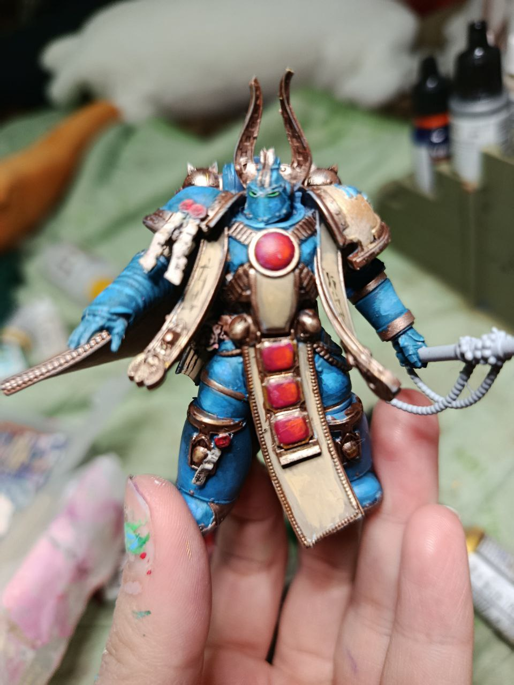
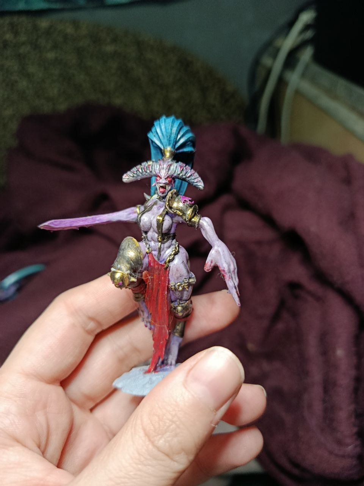

FDM (филамент) — пример готовых работ
Крупные, прочные модели: фигурки, прототипы, органайзеры

Лев Эль'Джонсон - высота 15 см, сопло 0,2мм, время печати около 42 часов, раскрашен акрилом

Сайфер - высота 10см, сопло - 0,2мм, время печати около 12 часов

Шкатулка - размер 16*7, сопло - 0,4мм, ручной покрас акрилом лаковое покрытие
Resin (смола) — пример готовых работ
Ультрадетализация: лица, миниатюры, коллекционные фигурки.

Маления (Elden Ring) - высота 20см, время печати около 12 часов, покрас кистью.

Миниатюра космодесантника Тысячи Сынов (Warhammer 40k) - высота 12см, время печати около 3х часов.

Демонетка Слаанеш (Warhammer 40k) - высота 7см, время печтаи около 3х часов.